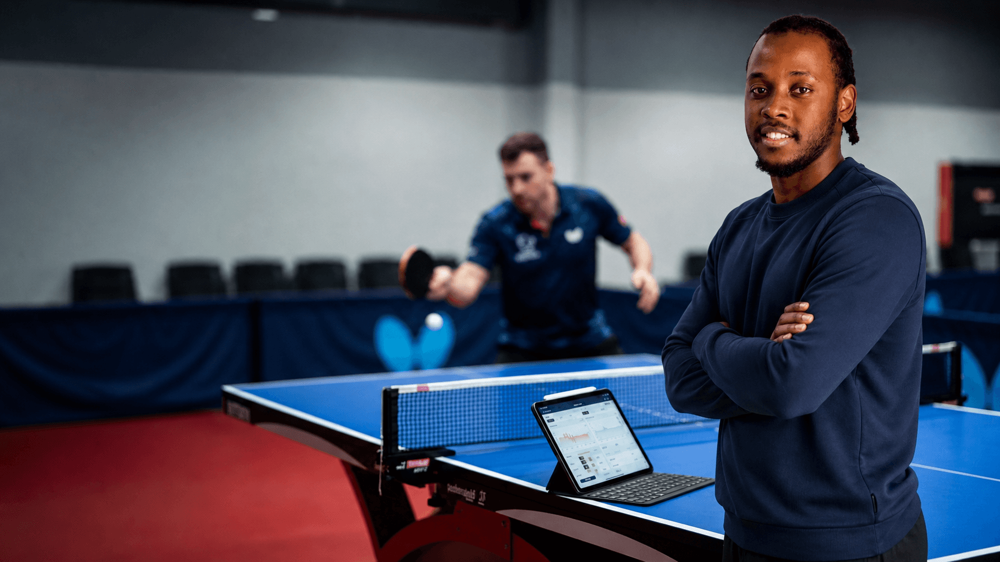
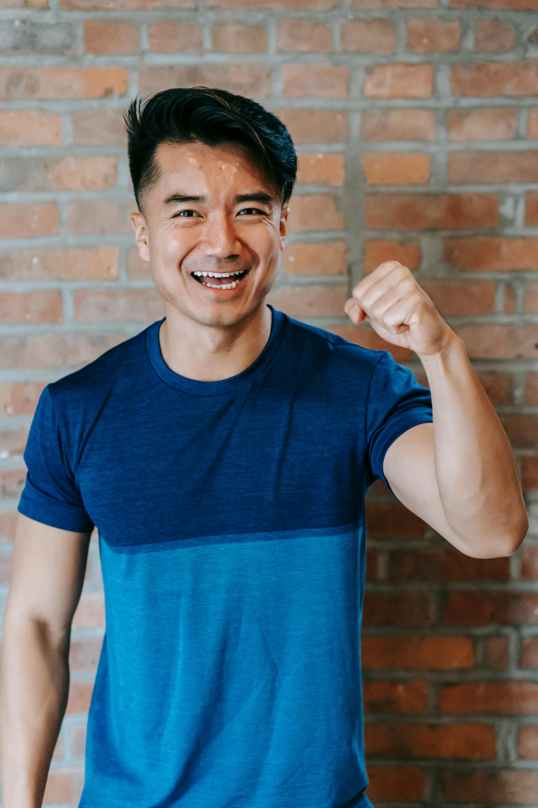
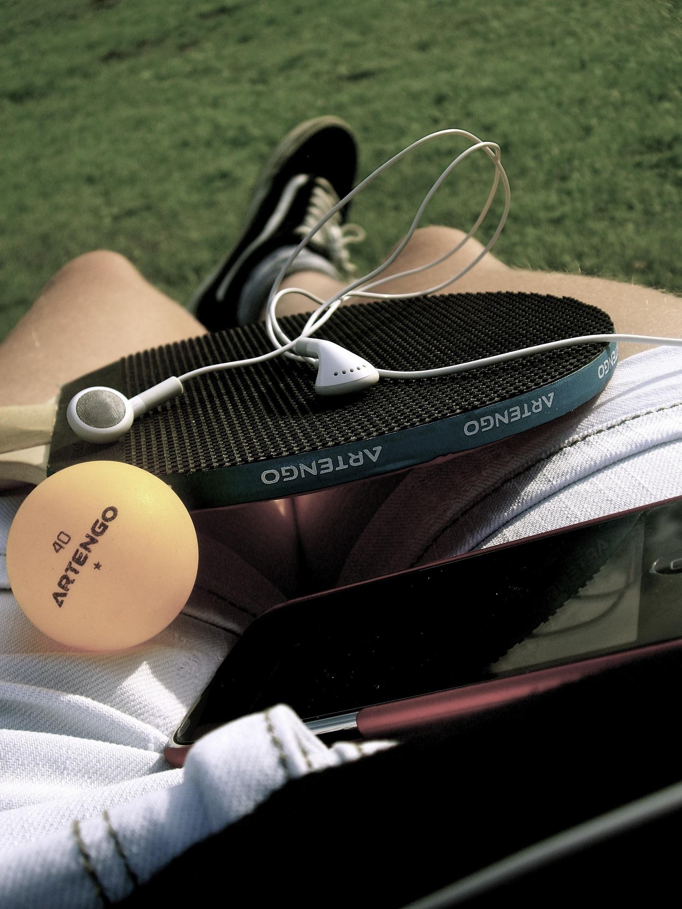
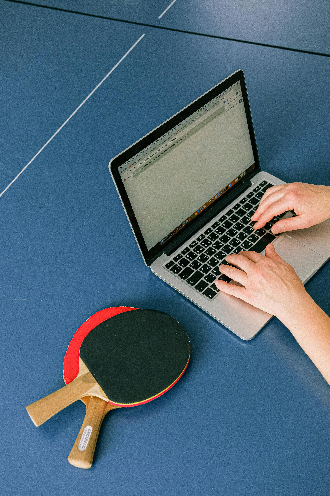
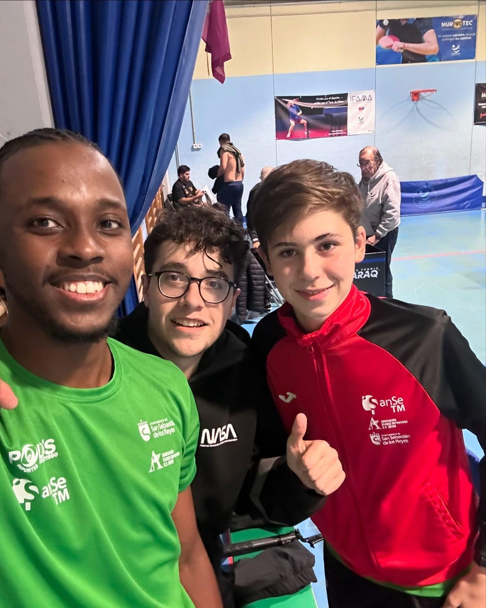

Pruebas reales de experiencia como atleta y manager deportivo en tenis de mesa. Cada momento cuenta una historia de dedicación y resultado.
Como jugador me he formado en centros de alto rendimiento como el CAR de Mirandela (Portugal), el Club Sanse y el NV Center, entrenando en entornos de máxima exigencia.
He competido 3 temporadas en ligas nacionales de primer nivel: Superdivisión, División de Honor y Primera Nacional española. Esa exigencia es lo que me permite entender de verdad lo que un atleta necesita para crecer.
Como manager estratégico, no gestiono simples entrenamientos. Construyo trayectorias competitivas que transforman el talento bruto en una carrera sólida en la élite.
Estoy abierto a colaboraciones con clubes, centros de entrenamiento y proyectos deportivos, aportando compromiso, experiencia en pista y visión de crecimiento.
Un enfoque estructurado para desarrollar el máximo potencial de cada atleta.

Diseño de una hoja de ruta personalizada para el ascenso real en el circuito competitivo.

Sesiones de sparring técnico enfocadas en táctica real y desarrollo de competición.

Acceso directo a mi network profesional en ligas y clubs de alto nivel en España y Portugal.
Competiciones, entrenamientos y sesiones de sparring en centros de élite.




Observa la calidad técnica y la intensidad competitiva en primera persona.
Los momentos que definen mi experiencia en el tenis de mesa de alto nivel.
Etapa como jugador en el Centro de Alto Rendimiento de Mirandela (Portugal), entrenando junto a deportistas de nivel competitivo internacional y absorbiendo metodología de élite.
Formación como atleta en dos de los centros más exigentes del panorama español, compartiendo pista con jugadores de División de Honor y Superdivisión.
Diseño y gestión del camino deportivo de jóvenes atletas, conectando talento con clubes y ligas competitivas. Un año construyendo trayectorias reales con resultados medibles.
3 temporadas compitiendo en las ligas nacionales de primer nivel en España, con participación activa en la presión del entorno competitivo de élite.
Experiencia directa en el circuito de Primera Nacional, conociendo de primera mano la dinámica de los clubs, la organización de torneos y las exigencias del sistema competitivo español.
Desarrollo técnico y estratégico con nuevas generaciones de atletas. Combinando la experiencia competitiva con la visión de manager para construir el camino completo hacia la élite.
El talento necesita dirección. Hablemos sobre el diagnóstico y el plan.